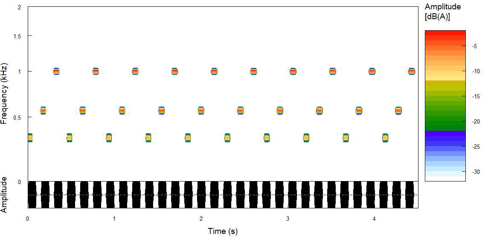

Florian KattnerHMU Health and Medical UniversityProfessor for Experimental Psychology (Professur für Allgemeine Psychologie) Google Scholar, ORCID, ResearchGate, PubMed, Loop, CV 📪 Schiffbauergasse 14, 14467 Potsdam, Germany 📧 florian.kattner[at]hmu-potsdam.de

|
|
Research Topics |
Key Publications |
Auditory Cognition and Perception
|
Kattner, F., & Bryce, D. (2022). Attentional control and metacognitive monitoring of the effects of different types of task-irrelevant sound on serial recall. Journal of Experimental Psychology: Human Perception and Performance, 48(2), 139-158. https://doi.org/10.1037/xhp0000982 Kattner, F., & Ellermeier, W. (2020). Distraction at the cocktail party: Attenuation of the irrelevant speech effect after a training of auditory selective attention. Journal of Experimental Psychology: Human Perception and Performance, 46(1), 10-20. https://doi.org/10.1037/xhp0000695 Kattner, F., & Ellermeier, W. (2014). Irrelevant speech does not interfere with serial recall in early blind listeners. Quarterly Journal of Experimental Psychology, 67(11), 2207-2217. https://doi.org/10.1080/17470218.2014.910537 Kattner, F., & Reimer, C. B. (2020). Dissociating central and auditory attention: Is there a shared bottleneck for response selection and auditory search? Quarterly Journal of Experimental Psychology, 73(10), 1564-1574. https://doi.org/10.1177/1747021820928030 |
Psychophysics and Methodology
|
Ellermeier, W., Kattner, F., & Raum, A. (2021). Cross-modal commutativity of magnitude productions of loudness and brightness. Attention, Perception, & Psychophysics, 83, 2955-2967. https://doi.org/10.3758/s13414-021-02324-y Kattner, F., Cochrane, A., & Green, C. S. (2017). Trial-dependent psychometric functions accounting for perceptual learning in 2-AFC discrimination tasks. Journal of Vision, 17(11), Article 3. https://doi.org/10.1167/17.11.3 Kattner, F., & Ellermeier, W. (2014). Fractionation of pitch intervals: An axiomatic study testing monotonicity, commutativity, and multiplicativity in musicians and non-musicians. Attention, Perception, & Psychophysics, 76(8), 2508-2521. https://doi.org/10.3758/s13414-014-0674-7 Kattner, F., & Gast, A. (2023). Scaling preferences using probabilistic choice models: Is there a ratio-scale representation of subjective liking? Psychological Research, 87, 1953-1965. https://doi.org/10.1007/s00426-022-01775-8 |
Learning and Transfer
|
Kattner, F. (2012). Revisiting the relation between contingency awareness and attention: Evaluative conditioning relies on a contingency focus. Cognition and Emotion, 26(1), 166-175. https://doi.org/10.1080/02699931.2011.565036 Kattner, F. (2015). Transfer of absolute and relative predictiveness in human contingency learning. Learning & Behavior, 43, 32-43. https://doi.org/10.3758/s13420-014-0159-5 Kattner, F., & Green, C. S. (2016). Transfer of dimensional associability in human contingency learning. Journal of Experimental Psychology: Animal Learning and Cognition, 42(1), 15-31. https://doi.org/10.1037/xan0000082 Kattner, F., Samaan, L., & Schubert, T. (2019). Cross-modal transfer after auditory task-switching training. Memory & Cognition, 47(5), 1044-1061. https://doi.org/10.3758/s13421-019-00911-x |